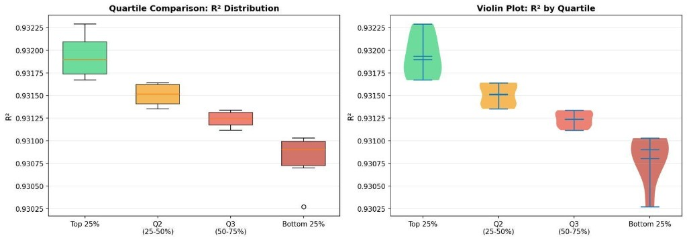
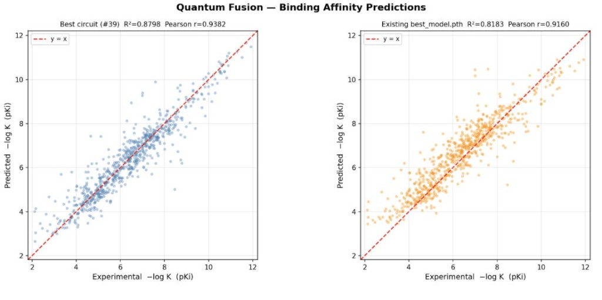
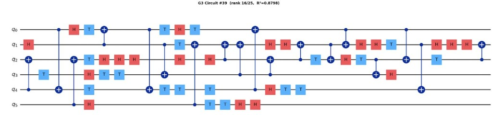
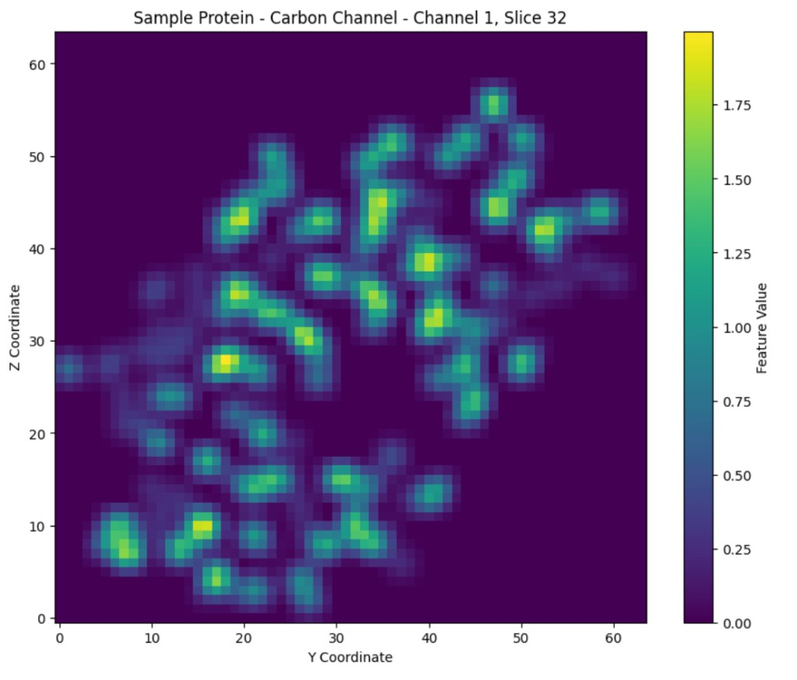
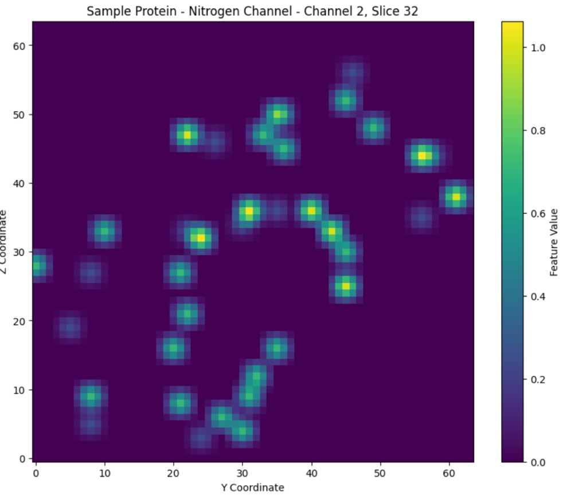
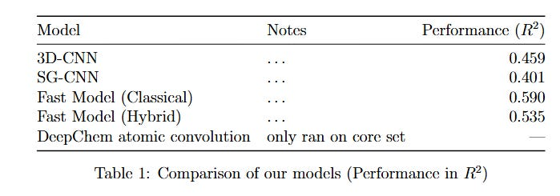

Varying random unitary circuits in a classically-modelled quantum neural network: how does it affect model predictability?
Based on work done by Sanskriti Shindadkar, Clyde Villacrusis, Manvi Agrawal, Hayk, and Karen
Calculating binding energy for proteins is an essential step in evaluating efficacy of potential drugs. It is a process that is computationally expensive and difficult, especially for large molecules, due to the number of complex interactions that need to be considered between the proteins and ligands. One promising area to investigate is using quantum machine learning to augment classical machine learning in order to speed up calculations.
There was an interesting 2023 and a followup 2024 paper that looked into replacing a layer in a classical neural network with a series of quantum circuits as a proof of concept on using quantum computing (in the future) to speed-up calculations. We were curious about how much choosing the right circuit really matters, especially as it is difficult to guess which circuits are correct before we test them.
The main focus of this blog post will be based on a key study by Domingo et al., published in 2023, and following work from the study. The initial study used a hybrid 3D CNN model, showing the potential for quantum machine learning for such datasets by replacing the penultimate layer with a quantum circuit.1 They found that the performance of the model with the quantum layer was comparable to that of the purely classical model. They tested different numbers of gates (simulating higher quantum gates is more classically expensive). Their hybrid models with a greater number of gates outperformed their classical baseline for the Pearson correlation of ~0.677. Their hybrid 300, 500, and 600 gate models performed with Pearson correlations of 0.685, 0.695, and 0.699 respectively.
A paper by Jones et al., published in 2021 used a more efficient classical model (combining the 3DCNN and the spatial graph CNN, i.e. SGCNN).2 It achieved a Pearson correlation coefficient of 0.810 using their Fusion model. The 3DCNN and SGCNN models on the refined set performed with R values 0.666 and 0.723 respectively, demonstrating an improvement through using feature extraction from both models.
This exploration is motivated by the model architecture from the Jones et al. paper, and the purpose of the Domingo et al., paper (to show proof of concept of quantum machine learning). We have succeeded in replacing a classical layer with a quantum layer, while demonstrating comparable performance in predicting the binding energy of a protein-ligand complex given the newer PDB molecular data.
Domingo and colleagues constructed the quantum layer using a quantum reservoir approach. The circuit architecture was fixed and generated by sampling from the G3 gate family. Note that G3 gates are defined as {CNOT, H, T}. They created the random circuits by sequentially adding a specified number of gates drawn from this family, and the resulting circuits were used as non-trainable feature transformations within the hybrid CNN. They trained multiple hybrid models where the only variation was the circuit depth (20, 50, 100, 200, 300, 400, 500, 600), and determined that predictive performance improvements saturated at 300 gates.
Our approach explores parameterized random circuits derived from the same G3 gate family. We evaluate how much the circuit choice affects predictive accuracy, if gate types and number of gates are held constant.
Scroll further down for more details on methodology. First, here are the findings, summarized in a lovely violin plot.
What did we find? How much do the circuits affect the r squared of the protein-ligand binding affinities?

Figure 1: Comparison of unitary-gate swaps by quartile, for adjusted R2. Note that the better performing quartile median is around 0.83, while the bottom quartile is around 0.79, showing a modest improvement.

Figure 2: Comparison of best circuit versus past best_model, for the validation set.

Figure 3: Sample unitary circuit.
There were also scripts written in order to determine if there were any statistically significant differences in the patterns between the top and bottom quartile-performing unitary circuits (such as frequency of different gates, frequency of gate order (e.g. CX after H), etc. and a full list of these tests can be found in the repository. They were all found to be statistically insignificant, which is mostly in line with the rest of the literature regarding difficulty interpreting why some circuits perform better for different tasks. However, this gives the chance for future researchers to conduct more experiments on our codebase.
Methodology
Our main results can be replicated in the Github repository linked at the bottom of the paper. We based our work off of the FAST repository,3 as well as the quantum-3DCNN hybrid repository.4
Note that similar to the researchers, we started with data from the PDB, which then went under standard preprocessing (hydrogenation, addition of partial charges, etc.) through ChimeraX. To provide a summary of our data processing and 3D-CNN/SG-CNN steps, we have adapted much of this following section from the Jones paper.
The PDB data format can be processed into a 19x48x48x48 grid, where the protein pocket and ligand are scaled, centered to the middle of the grid, and then broken into a 3D grid with dimensions of 48 angstroms in the x, y, and z dimensions. Each of these cubed units in the grid will have 22 different parameters: e.g. a score for carbon bonds, a score for heavy metals, etc. Note that most papers used 19 different parameters, but we one-hot encoded one of the parameters (hybridization), which resulted in the three extra. The core PDB dataset includes 228 protein-ligand complexes.


Figure 4: Visualized slices of a randomly selected protein, with values for channel/parameter 1 (carbon), and channel/parameter 2 (nitrogen), visualized on the left and right respectively.
The 3D-CNN Model
Uses 3D convolutions to process the voxelized protein-ligand data, putting the outputs of the convolutions through a series of fully connected layers. The original FAST implementation of the 3D-CNN used a structure where the raw voxelized data went in and the model tried predicting the binding affinity directly. Our improvement to this model was the addition of input and output normalization significantly boosting convergence rate and slightly improving performance over the baseline.
The SG-CNN Model
Preprocesses the protein-ligand data into a graph that encodes the interactions between molecules present in the dataset. It then gathers local data across the graph and combines it into vectors that are then pushed through fully connected layers for further processing.
The Fusion model
The outputs of last layers from 3DCNN and SGCNN were then extracted into a separate dataset that now had a series of 16-dimensional vectors corresponding to binding affinities. These were then used as input to a fully connected layer, predicting the binding affinities.
How we swapped a CNN layer for a quantum layer: The quantum network used in our exploration was constructed by using a fully connected quantum layer from the ingenii repository. We took the 16-dimensional inputs described earlier, passed them through a fully connected layer to decrease the number of inputs to the quantum layer, and finally added another fully connected layer at the output of the quantum layer. We performed limited hyperparameter tuning to choose the best configuration for the quantum fusion model.

Table 1: Comparison of the models. All the models except the Deepchem had the same train-test-val split for consistency.
How we tested different random unitary circuits: In order to build on the paper findings, we decided to test random quantum reservoir circuits from the G3 family, and compare performance. We generated 100 random gates, and then preselected the top 25 using an expressibility criterion (RFD), then compared their predictive performance, using r2 and adjusted r2 values. We used RFD instead of fidelity-variance, since fidelity can be less discriminative for deep G3-like circuits due to higher levels of entanglement that are not captured by just the state-overlaps.5 As the Domingo paper had found diminishing returns at ~300 gates, our circuit size was also set to 300.
As researchers are not yet sure what makes some circuits better than others for different use cases, comparing performance of different quartiles of the gates provided interesting insight on the variation of how helpful different circuits can be for improving r2 values on validation sets. Further detail about the unitary circuits can be found in the appendix.
Our code: https://github.com/sanskriti-ss/bindingaffinity
References
- Domingo, L., Djukic, M., Johnson, C., & Borondo, F. (2023). Binding affinity predictions with hybrid quantum-classical convolutional neural networks. Scientific Reports, 13(1), Article 17951. https://doi.org/10.1038/s41598-023-45269-y
- Jones, D., Kim, H., Zhang, X., Zemla, A., Stevenson, G., Bennett, W. F. D., Kirshner, D., Wong, S. E., Lightstone, F. C., & Allen, J. E. (2021). Improved Protein-Ligand Binding Affinity Prediction with Structure-Based Deep Fusion Inference. Journal of Chemical Information and Modeling, 61(4), 1583-1592. https://doi.org/10.1021/acs.jcim.0c01306
- https://github.com/LLNL/FAST
- https://github.com/ingenii-solutions/ingenii-quantum-hybrid-networks/
- Bi, X.-Y., Yu, Y.-M., Chen, Y.-H., & Zhong, Z.-R. (2025). General-purpose quantum architecture search based on deep reinforcement learning. Physical Review. A, 112(5), Article 052409. https://doi.org/10.1103/7rc4-p446